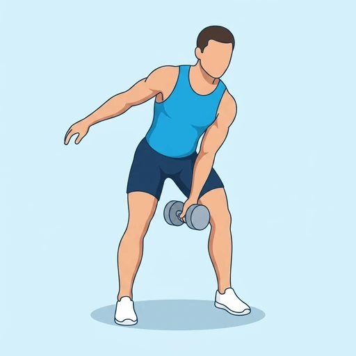

One-Arm Dumbbell Swing
This dynamic exercise builds explosive power in the glutes and hamstrings through a powerful hip hinge, engaging the core and shoulders for a full-body workout.
Full body · Dumbbell · Intermediate


Muscles worked by the One-Arm Dumbbell Swing
Primary
Secondary
Also called: glute, glutes, gluteus maximus, buttocks, butt, hamstring.
Equipment
Also called: db, dumbell, hex dumbbell, rubber dumbbell, hand weight.
How to do the One-Arm Dumbbell Swing
- Stand with feet shoulder-width apart, a dumbbell on the floor slightly in front of you.
- Hinge at your hips, keeping a flat back, and grasp the dumbbell with one hand.
- Hike the dumbbell back between your legs, then explosively drive your hips forward.
- Swing the dumbbell up to chest height, keeping your arm relaxed and straight.
- Allow the dumbbell to swing back down, hinging at the hips as it descends.
- Repeat for desired reps per side, maintaining control.
Form tips
- Focus on driving with your hips, not pulling with your arm.
- Keep your core braced throughout the movement for stability.
- Maintain a neutral spine; avoid rounding your back.
- Control the eccentric phase as the dumbbell swings down.
At a glance
| Body part | Full body |
|---|---|
| Category | Strength |
| Force type | Dynamic |
| Mechanic | Compound |
| Difficulty | Intermediate |
| Equipment | Dumbbell |
| Goals | Power, Endurance |
| Tags | Full body, Ballistic |
| MET | 8.0 (metabolic equivalent, for calorie estimates) |
| Unilateral | Yes |
| Bodyweight | No |
| Dataset id | one-arm-dumbbell-swing |
One-Arm Dumbbell Swing in German & Spanish
| German | Einarmiges Kurzhantel-Swing |
|---|---|
| Spanish | Swing con Mancuerna a un Brazo |
Descriptions, instructions and tips ship in all three languages in the JSON.
Related exercises
Exercise data (JSON)
The record below is exactly what exercises.json ships for this exercise — names, descriptions, instructions and tips in English, German and Spanish.
{
"id": "one-arm-dumbbell-swing",
"name_en": "One-Arm Dumbbell Swing",
"name_de": "Einarmiges Kurzhantel-Swing",
"name_es": "Swing con Mancuerna a un Brazo",
"description_en": "This dynamic exercise builds explosive power in the glutes and hamstrings through a powerful hip hinge, engaging the core and shoulders for a full-body workout.",
"description_de": "Diese dynamische Übung baut explosive Kraft in Gesäß und Oberschenkeln durch eine kraftvolle Hüftbeugung auf und beansprucht Rumpf und Schultern für ein Ganzkörpertraining.",
"description_es": "Este ejercicio dinámico desarrolla potencia explosiva en glúteos e isquiotibiales mediante una potente bisagra de cadera, involucrando el core y los hombros para un entrenamiento de cuerpo completo.",
"category": "strength",
"force_type": "dynamic",
"mechanic": "compound",
"difficulty": "intermediate",
"equipment": "dumbbell",
"body_part": "full_body",
"primary_muscles": [
"gluteus_maximus",
"hamstrings"
],
"secondary_muscles": [
"erector_spinae",
"forearm_flexors",
"lateral_deltoid"
],
"goals": [
"power",
"endurance"
],
"tags": [
"full_body",
"ballistic"
],
"variation_group": "kettlebell-swing",
"is_unilateral": true,
"is_bodyweight": false,
"instructions_en": [
"Stand with feet shoulder-width apart, a dumbbell on the floor slightly in front of you.",
"Hinge at your hips, keeping a flat back, and grasp the dumbbell with one hand.",
"Hike the dumbbell back between your legs, then explosively drive your hips forward.",
"Swing the dumbbell up to chest height, keeping your arm relaxed and straight.",
"Allow the dumbbell to swing back down, hinging at the hips as it descends.",
"Repeat for desired reps per side, maintaining control."
],
"instructions_de": [
"Stelle dich schulterbreit hin, eine Kurzhantel liegt leicht vor dir auf dem Boden.",
"Beuge dich aus der Hüfte, halte den Rücken flach und greife die Kurzhantel mit einer Hand.",
"Schwinge die Kurzhantel zwischen deine Beine zurück und treibe dann explosiv deine Hüften nach vorne.",
"Schwinge die Kurzhantel bis auf Brusthöhe, halte deinen Arm entspannt und gestreckt.",
"Lasse die Kurzhantel zurückschwingen und beuge dich in den Hüften, während sie absinkt.",
"Wiederhole für die gewünschten Wiederholungen pro Seite, behalte die Kontrolle."
],
"instructions_es": [
"Párate con los pies al ancho de los hombros, una mancuerna en el suelo ligeramente delante de ti.",
"Haz una bisagra de cadera, manteniendo la espalda recta, y agarra la mancuerna con una mano.",
"Lleva la mancuerna hacia atrás entre tus piernas, luego impulsa explosivamente tus caderas hacia adelante.",
"Balancea la mancuerna hasta la altura del pecho, manteniendo tu brazo relajado y estirado.",
"Permite que la mancuerna baje, haciendo una bisagra de cadera mientras desciende.",
"Repite las repeticiones deseadas por lado, manteniendo el control."
],
"tips_en": [
"Focus on driving with your hips, not pulling with your arm.",
"Keep your core braced throughout the movement for stability.",
"Maintain a neutral spine; avoid rounding your back.",
"Control the eccentric phase as the dumbbell swings down."
],
"tips_de": [
"Konzentriere dich darauf, mit den Hüften zu treiben, nicht mit dem Arm zu ziehen.",
"Halte deinen Rumpf während der gesamten Bewegung angespannt für Stabilität.",
"Behalte eine neutrale Wirbelsäule bei; vermeide es, deinen Rücken zu runden.",
"Kontrolliere die exzentrische Phase, wenn die Kurzhantel nach unten schwingt."
],
"tips_es": [
"Concéntrate en impulsar con tus caderas, no en tirar con tu brazo.",
"Mantén tu core contraído durante todo el movimiento para mayor estabilidad.",
"Mantén una columna vertebral neutra; evita redondear tu espalda.",
"Controla la fase excéntrica mientras la mancuerna baja."
],
"met": 8.0,
"images": {
"flat": {
"start": "images/flat/one-arm-dumbbell-swing-start.webp",
"peak": "images/flat/one-arm-dumbbell-swing-peak.webp"
}
}
}Fetch just this exercise
const { exercises } = await fetch(
"https://exercise-dataset.com/exercises.json"
).then(r => r.json());
const ex = exercises.find(e => e.id === "one-arm-dumbbell-swing");Free for personal and commercial in-app use with attribution (“Exercise data by RepDB”) — see the license and ready-made attribution snippets. Redistributing the data as a dataset or API is not permitted.